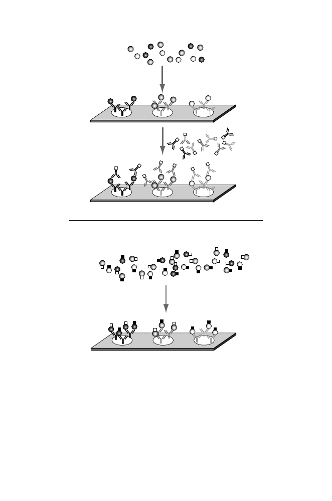

Bind targets
to probes
Add detection
antibodies
Bind labeled targets from
two different conditions
B.
A.
Fig. 11.12.
Schematic illustration of antibody microarrays. Each feature on the
slide corresponds to an antibody (Y-shaped patterns) directed to a different protein
antigen (shaded spheres). Antigens and cognate antibodies have similar shadings.
Panel A: Bound antigens are quantified by indirect labeling using a mixture of de-
tection antibodies, all labeled with the same dye (open squares). Antigen becomes
sandwiched between the capture antibodies constituting each feature and the detec-
tion antibodies. Panel B: Antigen capture format. Target proteins are isolated from
two conditions and differentially labeled with two different fluorescent dyes (open
and filled squares). After binding to the antibody features, amounts of antigen cor-
responding to each condition can be quantified by measuring fluorescence intensity
in two wavelength channels.